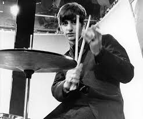
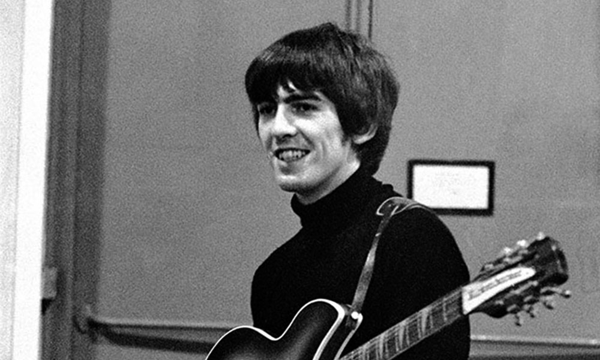

paul mccartney
(Liverpool, 1942) Compositor e intérprete británico que formó parte de The Beatles
y compuso, junto con John Lennon, la mayoría de las canciones del grupo. Tras la
disolución en 1970 de The Beatles, sin duda la banda de rock y pop más popular e
influyente de los 60, Paul McCartney fundó el grupo Wings con su mujer Linda Eastman
y el guitarrista Denny Laine y emprendió una dilatada trayectoria en solitario.
A los catorce años conoció en una fiesta a John Lennon, quien le introdujo en su
grupo The Quarrymen. Desde entonces trabó una gran amistad con Lennon, con el que
compondría la mayor parte de los temas. A finales de los años 50 la banda adoptó
diversas denominaciones antes de llegar a The Beatles, nombre con el que acudieron
a cumplir su contrato en Hamburgo en 1960.
De regreso a Liverpool, The Beatles tocaron habitualmente en el club The Cavern.
En la década de los sesenta el mítico grupo formado por Paul McCartney,
John Lennon, George Harrison y Ringo Starr llegó a cosechar un éxito sin
precedentes. En la última etapa del grupo las canciones siguieron con la firma
conjunta de John y Paul, aunque las componían por separado; entre los temas más
recordados de McCartney cabe citar And I love her, Yesterday y Hey Jude.
john lennon
(Liverpool, 1940 - Nueva York, 1980) Cantante y músico británico, fundador y
líder de The Beatles, el mítico cuarteto de Liverpool que dominó el panorama
musical en la década de 1960. Durante su etapa en The Beatles, John Lennon aportó
a la banda sus inquietudes creativas y su radical inconformismo, frente a la vena
más comercial y frívola de Paul McCartney, con quien compartió protagonismo en la
composición de los temas. Consumada en 1970 la disolución del grupo, emprendió una
nueva etapa musical con resultados tan memorables como el álbum Imagine (1971).
Tras un retiro de cinco años, en 1980 fue asesinado por un perturbado poco después
de presentar su último trabajo, Double Fantasy.
John creció escuchando discos de Little Richard, Chuck Berry, Ray Charles y Buddy
Holly, ilustres representantes de las corrientes musicales de aquella época.
Durante unos años estudió en la escuela de Bellas Artes y al cumplir los quince
resolvió sus dudas entre la pintura y la música a favor de ésta última.
En 1956 conoció a un muchacho que, como él, sólo se sentía plenamente realizado
con una guitarra en las manos: Paul McCartney. Con Paul formó su primer grupo
amateur, The Quarrymen, dando comienzo a un período de aprendizaje acelerado de los
ritmos del rock and roll.
John y Paul se dedicaron a componer sus propias canciones como si se tratara de
un entretenimiento. Dos años después se les unió George Harrison y se atrevieron a
actuar en algunos pequeños locales

ringo star
Ringo Starr (1940), músico, cantante, compositor, actor y director británico,
se hizo famoso en los años 60 como baterista del grupo musical The Beatles, uno de
los grupos más grandes de todos los tiempos.
En 1960, en un viaje a Hamburgo, Alemania, Ringo conoció a los Beatles
(John Lennon, Paul MacCartney, George Harrison y Pete Best). En 1962, los Beatles
firmaron con el manager Briam Epstein, cambiaron su look y Ringo fue invitado a
tocar la batería de la banda. En agosto hizo su primera presentación con la
formación definitiva. En septiembre del mismo año lanzaron su primer álbum, un
doble compacto con las canciones «Love Me Do» y «P.». S. I Love You», compuesta
por Lennon y McCartney. A principios de 1963 la banda estaba en todas las listas
de éxitos británicas.
La banda tuvo una carrera meteórica. En 1963 lanzaron «Please Please Please Me».
En 1964 la banda hizo su primera presentación en Nueva York, a la que asistió una
multitud. En 1965, la banda ya estaba lanzando su sexto álbum y había conquistado
las pantallas de cine. Ese mismo año, la Reina Isabel II condecoró al grupo con la
Orden del Imperio Británico. En 1967 el empresario Brian murió por sobredosis.

george harrison
(Liverpool, 1943 - Los Ángeles, 2001) Guitarrista y compositor británico
de música pop, miembro fundador de los Beatles. George Harrison nació el
24 de febrero de 1943 en Wavertree, suburbio de Liverpool, ciudad por
entonces devastada por los aviadores nazis.
Desde pequeño, escuchaba todo tipo de música por la radio, desde el viejo
music-hall británico hasta el country de Hank Williams. A los trece años
le compró a un amigo su primera guitarra, por algo más de tres libras.
Por entonces se hizo amigo de Paul McCartney, con quien realizaba el mismo
trayecto diario en autobús. Paul le presentó a John Lennon, con quien
formaba el grupo The Quarrymen.
Harrison participó en la primera formación de The Beatles, con quienes
trabajó durante años en clubes de Liverpool y Hamburgo (Alemania).
La historia emprendió el vuelo cuando, en 1962, el mánager Brian Epstein
les consiguió un contrato con EMI y grabaron, con George Martin de
productor, Love me do. Durante esa sesión fue expulsado el batería Pete
Best. Su sustituto, Ringo Starr, se convertiría en uno de los mejores
amigos de George hasta el final de sus días. En pocos meses, el grupo se
convirtió en un fenómeno de masas en Gran Bretaña, y en 1964 en el grupo
favorito de América con I want to hold your hand. La película A hard day’s
night, estrenada el mismo año, hizo de la «beatlemanía» un fenómeno mundial.